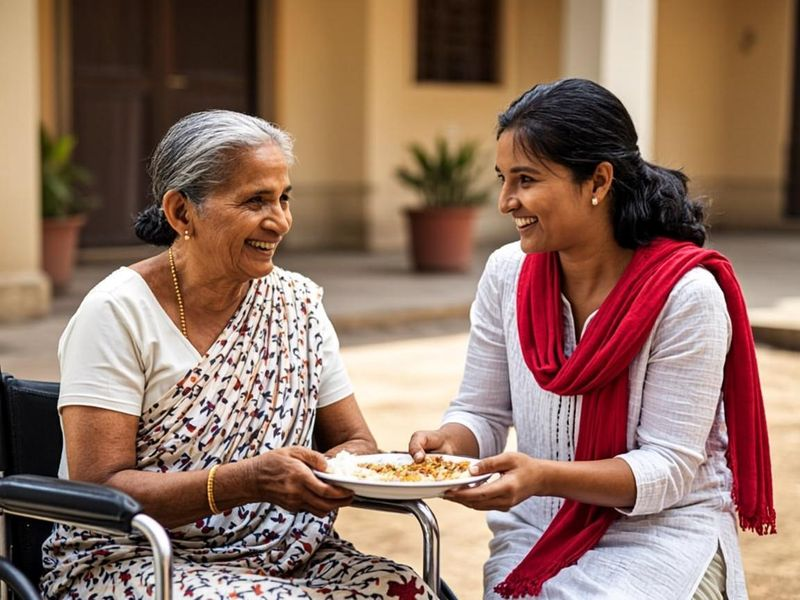
Elderly Care
Supporting existing old age homes with essential supplies, companionship initiatives, and welfare assistance — so that the elders who gave us so much continue to feel valued, heard, and cared for.
Serving communities with compassion through education, care, cultural preservation, healthcare, and village welfare.
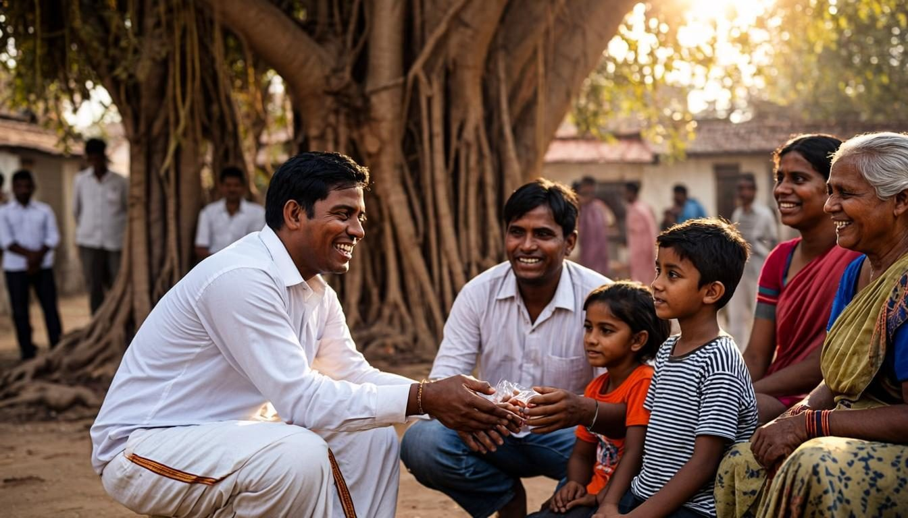
Eshwari Charitable Foundation (R.) exists to bring comfort, opportunity, and dignity to the people who need them most.
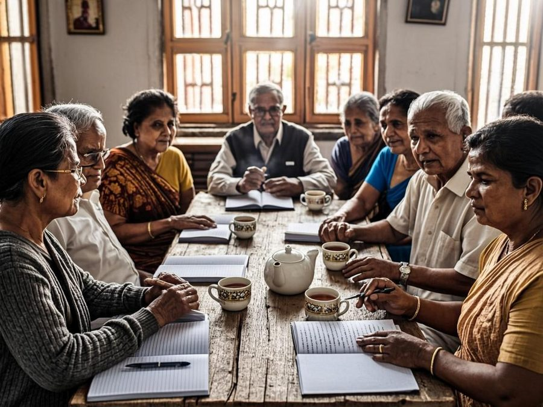
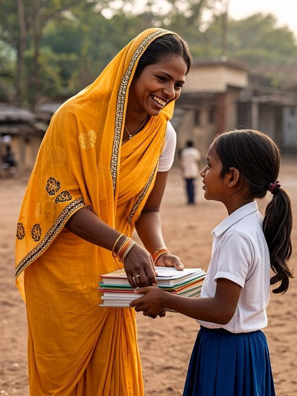
Eshwari Charitable Foundation (R.) is a charitable organization built on a simple belief — that everyday kindness, organized with care and sincerity, can change the direction of a person's life. The foundation works alongside communities to support initiatives that nurture learning, protect health, honour elders, preserve cultural heritage, and care for animals.
Rather than replacing the good work already being done, the foundation extends a helping hand to existing old age homes, orphanages, schools, gaushalas, and community institutions — offering resources, companionship, and practical assistance where it is genuinely needed.
"A compassionate society where every individual is treated with dignity and every community has the opportunity to thrive."
"To support meaningful social welfare initiatives through education, healthcare, elderly and child welfare, cultural preservation, animal care, and rural community development."
Every act of service begins with someone who cares. This space honours the person whose compassion set this foundation in motion.
[FOUNDER BIOGRAPHY] — A short biography of the founder will appear here once the official details are shared. It may describe the journey, the inspirations, and the life experiences that shaped a life devoted to service.
Reserved placeholder — please supply verified information before publishing."Suggested draft: Compassion is not a grand gesture — it is the quiet decision to stand beside someone who needs us. At Eshwari Charitable Foundation, we believe that serving elders, children, villages, and even the gentle cows of our land is a sacred duty. With your support, every small act of kindness becomes a blessing that travels further than we can see."
— [FOUNDER NAME], Founder
This is a suggested draft message about compassion and service. It does not attribute personal experiences to the founder and must be replaced or approved by the founder before publication.The foundation draws its inspiration from enduring Indian values — reverence for elders, tenderness towards children, devotion to cultural heritage, and gratitude towards the animals that share our lives. These values guide every initiative the foundation chooses to support.
From a warm meal for an elder to fodder for a gentle cow, each initiative answers a real need with quiet, practical care. The foundation supports existing institutions in these areas — it does not own or operate them.

Supporting existing old age homes with essential supplies, companionship initiatives, and welfare assistance — so that the elders who gave us so much continue to feel valued, heard, and cared for.
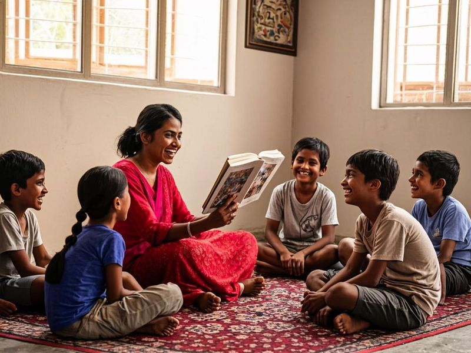
Supporting orphanages and children in need through appropriate care, essential resources, and opportunities for development.
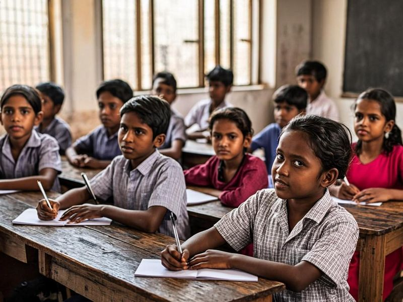
Helping children access educational materials, learning resources, and other appropriate educational assistance.
Supporting temple rejuvenation, maintenance, cultural preservation, and related community activities.
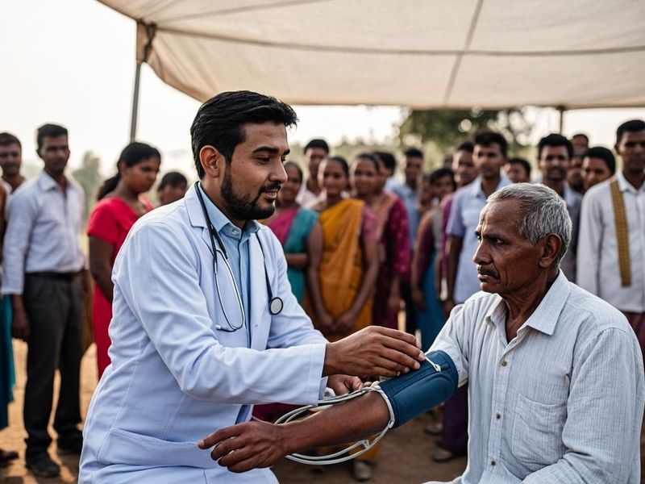
Organizing medical camps, promoting health awareness, and facilitating access to basic healthcare.
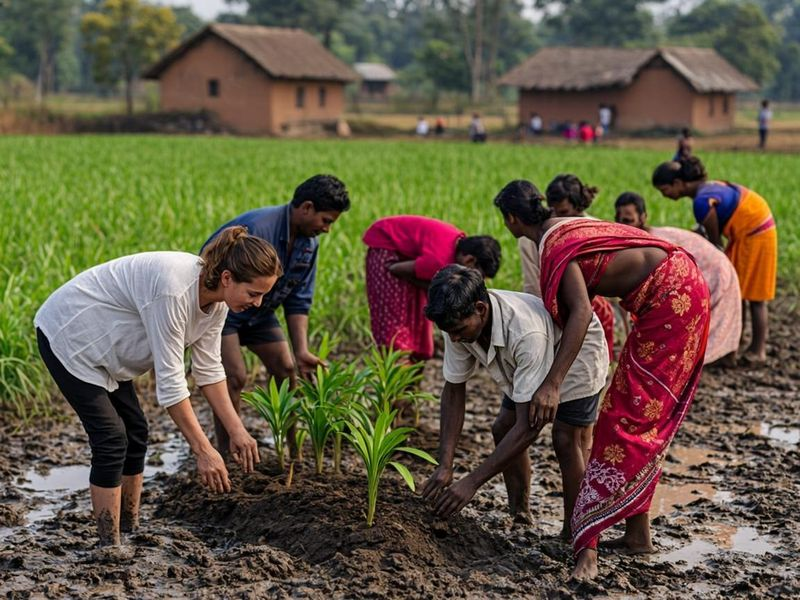
Supporting rural community development and locally relevant welfare initiatives.
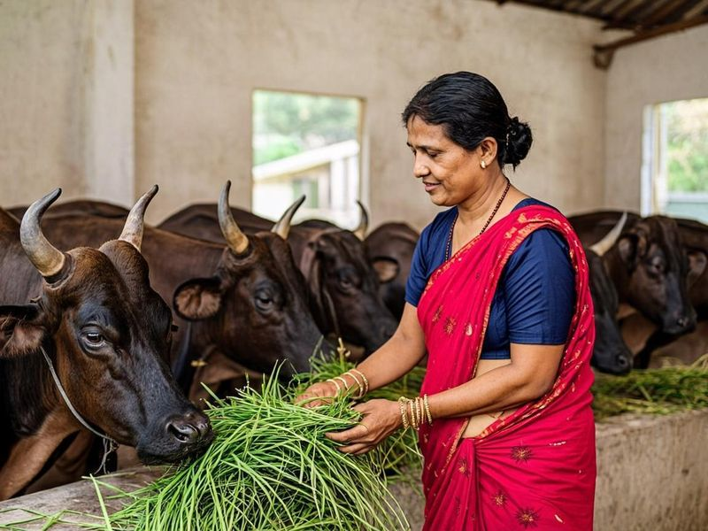
Supporting existing cow shelters through fodder, shelter-related assistance, and animal welfare activities.
A closer look at how each area of service is supported, and the spirit in which the work is done.
Elderly Care focuses on supporting existing old age homes — institutions that already care for seniors — with the things that make daily life warmer and more dignified. This may include essential supplies, companionship visits, festival celebrations, and general welfare assistance offered in coordination with the homes.
The foundation believes that our elders deserve to age with grace and respect. Companionship is at the heart of this initiative: sitting with an elder, listening to their stories, and marking important occasions together are treated as being just as valuable as material support. The foundation does not own or operate old age homes; it supports them.
Child Welfare extends support to orphanages and children in need through care, essential resources, and opportunities for development. Every child deserves safety, nourishment, and the simple joy of childhood, and this initiative is designed around those everyday needs.
Support is offered thoughtfully and in coordination with the institutions that care for the children, ensuring that assistance is appropriate, welcome, and genuinely useful. The foundation does not own or operate orphanages; it stands beside those that do.
Children's Education helps young learners access educational materials, learning resources, and other appropriate educational assistance. A notebook, a school bag, or a set of textbooks may seem small, but for a determined child it can be the difference between leaving school and staying in it.
The initiative works with families, schools, and local communities to understand what is genuinely needed, so that support reaches the children who will benefit from it most. The foundation supports education through assistance and resources; it does not operate schools.
Temples have been the heartbeat of Indian community life for centuries — places of worship, gathering, festivals, and shared memory. This initiative supports temple rejuvenation and maintenance, along with cultural preservation and related community activities that keep traditions alive.
By caring for heritage spaces and encouraging cultural participation, the foundation helps ensure that the traditions which bind communities together continue to be celebrated by the generations that follow.
Medical Camps bring basic healthcare closer to the communities that need it. The foundation organizes medical camps, promotes health awareness, and facilitates access to basic healthcare services — particularly in rural areas where a doctor's visit can mean a long and costly journey.
Camps are conducted with qualified medical professionals, and the emphasis is always on preventive awareness as much as check-ups: helping people understand their health, spot early warning signs, and know where to seek further care.
Village Welfare supports rural community development and locally relevant welfare initiatives. Every village knows its own needs best — whether that is cleaner surroundings, better community spaces, saplings for shade and soil, or support for local gatherings — so this initiative begins by listening.
The foundation works alongside villagers rather than for them, encouraging participation at every step so that improvements are owned, maintained, and celebrated by the community itself.
Gaushala & Cow Welfare supports existing cow shelters with fodder, shelter-related assistance, and animal welfare activities. In Indian tradition, the cow is cherished as a symbol of gentleness and generosity, and caring for her is regarded as an act of quiet devotion.
Support is extended to gaushalas that already do this work every day — helping them feed, shelter, and care for their animals with dignity. The foundation does not own or operate gaushalas; it supports them.
Discover traditional Ayurvedic products and wellness offerings.
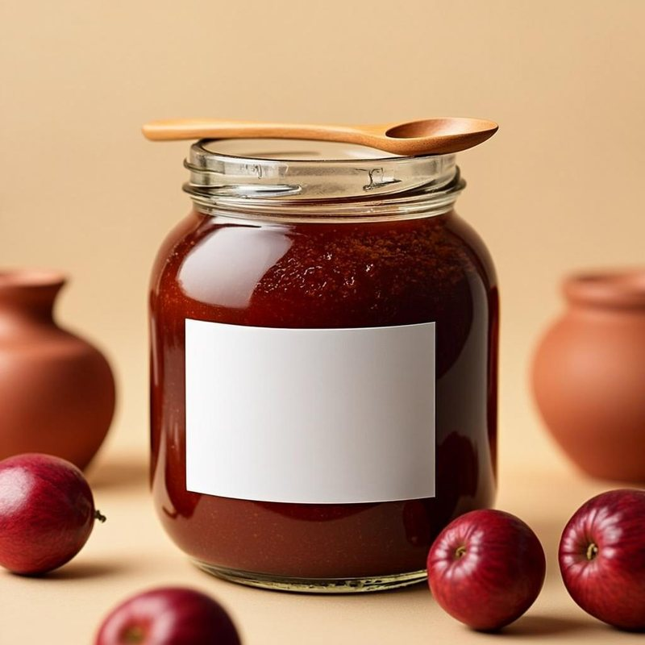
Wellness FoodsA sample product entry — replace with the foundation's verified product and details.
₹ ——Price on request
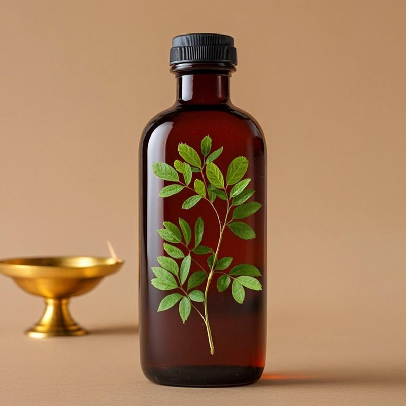
Wellness OilsA sample product entry — replace with the foundation's verified product and details.
₹ ——Price on request
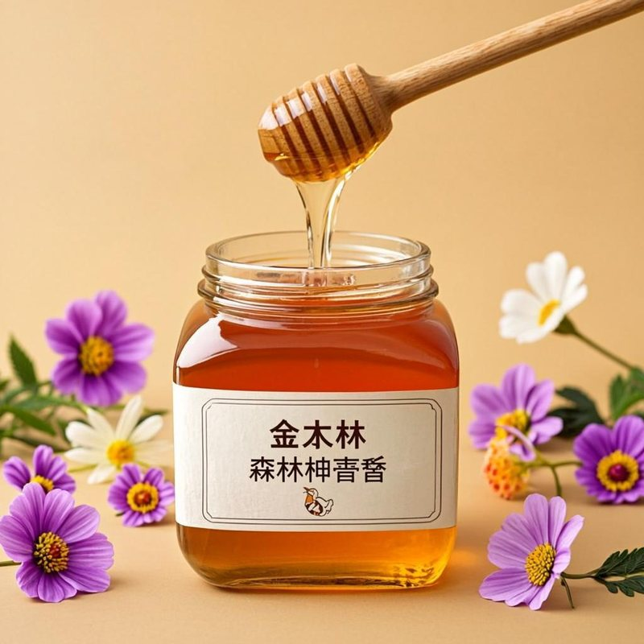
Wellness FoodsA sample product entry — replace with the foundation's verified product and details.
₹ ——Price on request
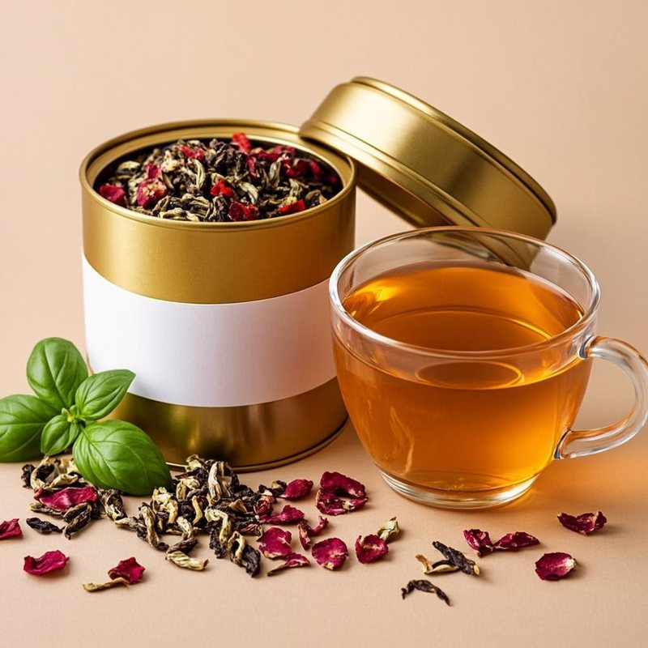
Herbal Teas & BlendsA sample product entry — replace with the foundation's verified product and details.
₹ ——Price on request
Illustrative scenes that reflect the spirit of the foundation's areas of service. These are generated visuals, not photographs of actual activities — they will be replaced with real photographs as work begins.
Kindness becomes powerful when it is shared. There is a place for every helping hand in this circle of care.
Your contribution helps sustain care for elders and children, learning materials for young minds, medical camps, cultural preservation, and welfare activities across villages.
Donate NowOffer your time and talents — whether at a medical camp, a companionship visit, a tree plantation, or behind the scenes. Every skill finds a purpose here.
I Want to VolunteerInstitutions, temples, schools, gaushalas, doctors, and well-wishers — collaboration multiplies impact. Partner with the foundation to serve more, together.
Start a PartnershipWhether you wish to volunteer, partner with us, or simply learn more — please write to us or send a message below.
Contact details shown above are placeholders — the foundation's official email, phone, address, and social links will appear here once supplied (see README).
Your message has been validated and looks good to send. Please note: this website preview does not yet have a message-delivery backend, so nothing has actually been sent. Once the form is connected (see README), messages will reach the foundation directly.